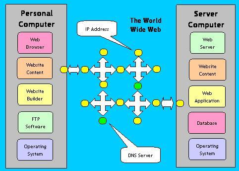

World Wide Web (WWW)

The World Wide Web (WWW) is a global system of interlinked hypertext documents and resources that are accessed over the Internet using web browsers. It enables users to view websites, navigate between pages using hyperlinks, and access multimedia content such as text, images, videos, and interactive applications.
The World Wide Web was invented by Tim Berners-Lee in 1989 and has become one of the most widely used services on the Internet. It operates through technologies such as HTML, HTTP, and URLs, which work together to deliver web content from servers to users.
The WWW is not the same as the Internet; rather, it is a service that runs on top of the Internet infrastructure.